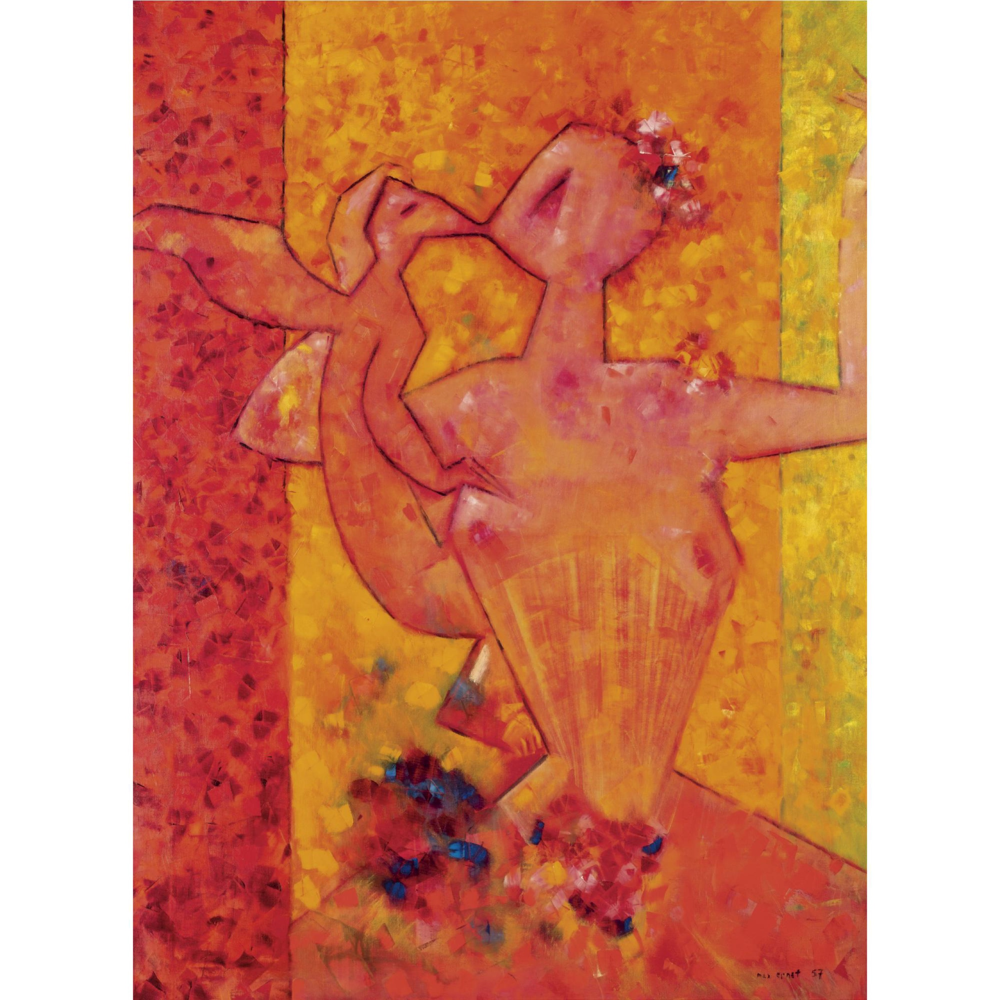
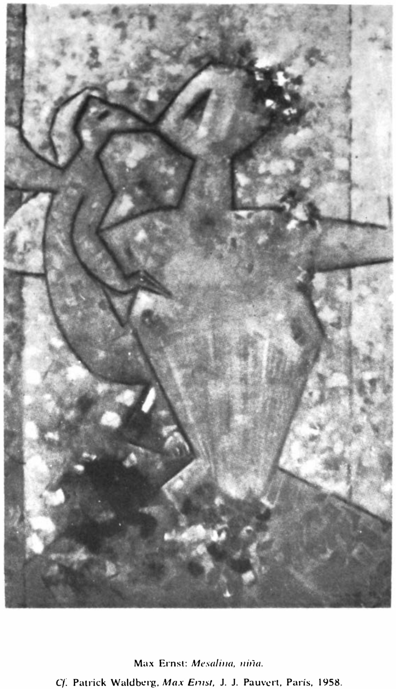

Lágrimas de Eros · Obra 91 de 124
Mesalina niña (Messaline enfant)
Max Ernst (1957)

Una figura femenina geometrizada sobre fondo moteado. Bataille la titula «Mesalina niña», por la emperatriz romana, y remite a la monografía de Patrick Waldberg (Pauvert, 1958).
Lo que hace que destaque
Una figura femenina geometrizada sobre fondo moteado. Bataille la titula «Mesalina niña», por la emperatriz romana, y remite a la monografía de Patrick Waldberg (Pauvert, 1958).
Contexto histórico
Los registros de subastas (Sotheby's) mencionan un óleo de Ernst titulado «Messaline enfant», fechado en 1957, pero no se ha podido leer la ficha, así que no se dan ni la fecha ni la sede. «Por la emperatriz romana» es una deducción del título. Firmado y fechado «max ernst 57»; pintado en Sedona (Arizona) en el invierno de 1956-1957 (Spies n.º 3278). Pasó por Iolas, William N. Copley, Barnet Hodes y Richard Feigen, y se vendió en Sotheby's Nueva York en 2007 por 1.104.000 USD; la bibliografía del lote cita «Les Larmes d'Eros». Bataille reproduce un recorte en blanco y negro.
Autoría y procedencia
Max Ernst (1891-1976), pintor, escultor y poeta alemán nacionalizado francés, pionero del dadaísmo y figura primordial del movimiento surrealista.
En los libros
Las lágrimas de Eros, de Georges Bataille · Lámina de la p. 167
Ficha pendiente de contrastar con fuentes académicas.
Otras vistas
